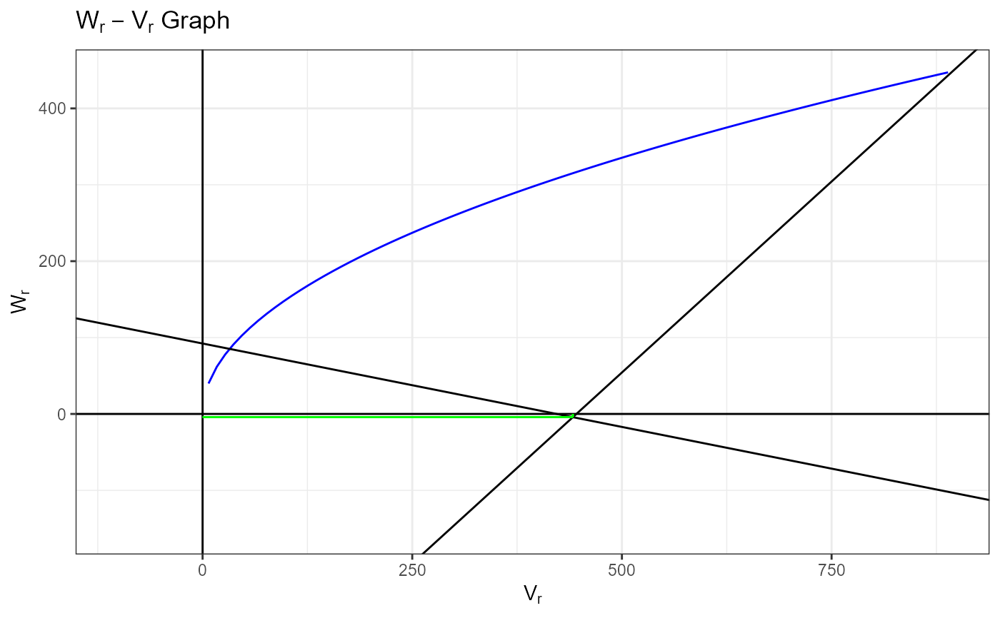

Hayman is used for performing Diallel Analysis using Hayman's Approach.
Hayman(y, Rep, Cross1, Cross2, data)Numeric Response Vector
Replicate as factor
Cross 1 as factor
Cross 2 as factor
A data.frame
Means Means
ANOVA Analysis of Variance (ANOVA) table
Genetic.Components Genetic Components
Effects Effects of Crosses
StdErr Standard Errors of Crosses
Diallel Analysis using Haymans's approach.
Hayman, B. I. (1954 a) The Theory and Analysis of Diallel Crosses. Genetics, 39, 789--809.
Hayman, B. I. (1954 b) The Analysis of Variance of Diallel Tables. Biometrics, 10, 235--244.
Hayman, B. I. (1957) Interaction, Heterosis and Diallel Crosses. Genetics, 42, 336--355.
Singh, R. K. and Chaudhary, B. D. (2004) Biometrical Methods in Quantitative Genetic Analysis. New Delhi: Kalyani.
#------------------------------------------
## Diallel Analysis with Haymans's Aproach
#------------------------------------------
Hayman1Data <-
Hayman(
y = Yield
, Rep = Rep
, Cross1 = Cross1
, Cross2 = Cross2
, data = HaymanData
)
Hayman1Data
#> $Means
#> Cross1 Cross2 Cross3 Cross4 Cross5 Cross6 Cross7 Cross8
#> Cross1 85.645 87.010 90.455 114.945 120.2900 68.550 107.6425 52.640
#> Cross2 80.690 98.260 111.575 88.170 99.9300 73.265 97.6400 85.650
#> Cross3 102.230 104.555 74.070 100.645 94.2850 100.885 111.5400 117.735
#> Cross4 119.115 89.310 102.675 91.640 85.2850 105.795 64.4500 46.855
#> Cross5 111.290 102.890 88.265 83.390 54.1025 84.150 81.9350 94.820
#> Cross6 68.835 71.295 99.575 108.665 87.9650 100.390 121.6100 53.740
#> Cross7 109.265 87.820 108.445 57.650 78.7500 115.670 90.9600 125.270
#> Cross8 48.720 83.145 115.400 46.740 93.3200 60.240 118.1700 82.000
#>
#> $ANOVA
#> Df Sum Sq Mean Sq F value Pr(>F)
#> Total 255 127716
#> Rep 3 1036 345.4 3.0006 0.031825 *
#> Treatment 63 104924 1665.5 14.4683 < 0.00000000000000022 ***
#> Additive 7 15219 2174.1 18.8868 < 0.00000000000000022 ***
#> Non-Additive 28 88243 3151.5 27.3783 < 0.00000000000000022 ***
#> b1 1 1368 1367.6 11.8807 0.000699 ***
#> b2 7 13530 1932.9 16.7915 < 0.00000000000000022 ***
#> b3 20 73345 3667.3 31.8586 < 0.00000000000000022 ***
#> Maternal 7 311 44.4 0.3856 0.910004
#> Reciprocal 21 1151 54.8 0.4763 0.975768
#> Error 189 21756 115.1
#> ---
#> Signif. codes: 0 ‘***’ 0.001 ‘**’ 0.01 ‘*’ 0.05 ‘.’ 0.1 ‘ ’ 1
#>
#> $VOLO
#> [1] 224.9646
#>
#> $In.Value
#> [1] 315.1641
#>
#> $a
#> [1] 92.20385
#>
#> $b
#> [1] -0.2184088
#>
#> $Wr.Vr.Table
#> Wr Vr Wr.Minus.Vr Wr.Plus.Vr Yr Wri
#> Cross1 -132.56217 532.6487 -665.2108 400.08649 85.6450 346.1605
#> Cross2 -92.09404 134.8819 -226.9759 42.78784 98.2600 174.1943
#> Cross3 79.64105 196.9768 -117.3358 276.61788 74.0700 210.5061
#> Cross4 34.63611 495.1323 -460.4962 529.76840 91.6400 333.7473
#> Cross5 158.46976 352.0611 -193.5914 510.53087 54.1025 281.4273
#> Cross6 39.23575 506.7741 -467.5384 546.00985 100.3900 337.6481
#> Cross7 32.77330 424.9207 -392.1474 457.69404 90.9600 309.1798
#> Cross8 -153.93912 888.8355 -1042.7746 734.89634 82.0000 447.1650
#> Wrei Wreip
#> Cross1 -24.1312782 86.88985
#> Cross2 62.7444691 -310.87692
#> Cross3 49.1823885 -248.78198
#> Cross4 -15.9373750 49.37348
#> Cross5 15.3106225 -93.69769
#> Cross6 -18.4800492 61.01530
#> Cross7 -0.6025568 -20.83807
#> Cross8 -101.9255955 443.07665
#>
#> $Components.of.Variation
#> Estimate StdErr t.value
#> E 29.67728 74.84918 0.3964944
#> D 195.28734 224.54754 0.8696926
#> F 422.33301 530.58515 0.7959759
#> H1 1926.38733 516.20165 3.7318504
#> H2 1859.08553 449.09509 4.1396256
#> h2 136.59673 317.04090 0.4308489
#>
#> $Other.Parameters
#> Other.Parameters
#> 1 3.14076006
#> 2 0.24126580
#> 3 2.05009853
#> 4 -0.19614373
#> 5 0.03847236
#> 6 0.07347523
#> 7 -0.19265899
#>
#> $Fr
#> Fr
#> Fr1 496.7580
#> Fr2 1211.3553
#> Fr3 743.6952
#> Fr4 237.3941
#> Fr5 275.8692
#> Fr6 204.9112
#> Fr7 381.5429
#> Fr8 -172.8617
#>
names(Hayman1Data)
#> [1] "Means" "ANOVA"
#> [3] "VOLO" "In.Value"
#> [5] "a" "b"
#> [7] "Wr.Vr.Table" "Components.of.Variation"
#> [9] "Other.Parameters" "Fr"
Hayman1DataMeans <- Hayman1Data$Means
Hayman1DataANOVA <- Hayman1Data$ANOVA
Hayman1DataWr.Vr.Table <- Hayman1Data$Wr.Vr.Table
Hayman1DataComponents.of.Variation <- Hayman1Data$Components.of.Variation
Hayman1DataOther.Parameters <- Hayman1Data$Other.Parameters
Hayman1DataFr <- Hayman1Data$Fr
#----------------
# Wr-Vr Graph
#----------------
VOLO <- Hayman1Data$VOLO
In.Value <- Hayman1Data$In.Value
a <- Hayman1Data$a
b <- Hayman1Data$b
Wr.Vr <- Hayman1Data$Wr.Vr.Table
library(ggplot2)
ggplot(data=data.frame(x=c(0, max(In.Value, Wr.Vr$Vr, Wr.Vr$Wr, Wr.Vr$Wrei))), aes(x)) +
stat_function(fun=function(x) {sqrt(x*VOLO)}, color="blue") +
geom_hline(yintercept = 0) +
geom_vline(xintercept = 0) +
geom_abline(intercept = a, slope = b) +
geom_abline(intercept = mean(Wr.Vr$Wr)-mean(Wr.Vr$Vr), slope = 1) +
geom_segment(aes(
x = mean(Wr.Vr$Vr)
, y = min(0, mean(Wr.Vr$Wr))
, xend = mean(Wr.Vr$Vr)
, yend = max(0, mean(Wr.Vr$Wr))
)
, color = "green"
) +
geom_segment(aes(
x = min(0, mean(Wr.Vr$Vr))
, y = mean(Wr.Vr$Wr)
, xend = max(0, mean(Wr.Vr$Vr))
, yend = mean(Wr.Vr$Wr)
)
, color = "green"
) +
lims(x=c(min(0, Wr.Vr$Vr, Wr.Vr$Wrei), max(Wr.Vr$Vr, Wr.Vr$Wrei)),
y=c(min(0, Wr.Vr$Wr, Wr.Vr$Wrei), max(Wr.Vr$Wr, Wr.Vr$Wri))
) +
labs(
x = expression(V[r])
, y = expression(W[r])
, title = expression(paste(W[r]-V[r] , " Graph"))
) +
theme_bw()
#> Warning: NaNs produced
#> Warning: Removed 11 rows containing missing values (`geom_function()`).
